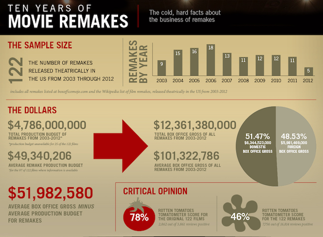

Sherlock Holmes
Sherlock Holmes
In the 21st Century...
Sherlock Holmes In the 21st Century...

Brand extension research has found that a high perceived similarity between the parent brand and the extension product leads to a more favorable attitude toward the extension (Dacin and Smith 230). However, in studying movie sequels, Sood and Dreze have provided evidence of a satiation effect of similarity—a very high level of perceived similarity can be adversarial in the context of hedonic goods because it implies a limited extent of sensation value in terms of novelty and variety (354). If the awareness of the original is very low when the remake is announced, consumers do not recognize the connection to the original movie brand when evaluating the remake, and the movie remake cannot capitalize on its brand. However, if the remake is based on a very widely known original movie, the hedonic sensations the remake offers will be limited, as audiences have experienced the same sensations before and a satiation effect is likely to occur (Sood and Dreze 353), which should reduce the attractiveness of the remake for audiences.
The financial success of sequels found in the Sherlock Holmes remakes can be linked to their ability to offer sensations (by inventing new adventures of well-known characters and by adding a new modality to an existent narrative, respectively) in combination with high levels of familiarity (a hero who is well-known from previous cinematic- Sherlock Holmes and John Watson) (Bohnenkamp et al. 19). In another research on brand extension, Muzumdar states that “Consumers' feedback results from their perception towards a movie. Perceptions are built mainly on their experience and word of mouth.” (Muzumdar 11). The audience of a movie tends to build these perceptions based on the sensations and familiarity they feel towards the movie. His study concludes by proving that the factor of the title is the most influential factor that affects the perception of a consumer. A movie’s potential to provide moviegoers with sensations and familiarity is influenced by its connection to a pre-existing brand. While unbranded movies are unlimited in their potential to offer novel sensations, they cannot offer consumers familiar characters.
Although remakes are more restricted by the original movie on which they are based than sequels are, producers can still vary the level of similarity to a certain degree. Examples for such variations include the transfer of the story to a new place or time, or the addition of new supporting characters and new plot twists to the existing narrative. Based on a contingency model that was derived from the sensations-familiarity framework (Bohnenkamp et al.) and brand extension research (Muzumdar), we are also able to demonstrate that the economic potential of remakes differs due to several factors and that specific types of remakes are indeed more successful than other movies. I expect that the success of remakes with audiences is influenced by the similarity of a remake to the original movie and that satiation effects also exist for remakes. Consequently, remakes that are perceived to be very similar to the movies they are based on will be less stimulating, and consequently, less successful than those that are less similar.
Porter, Lynnette R. Sherlock Holmes for the 21st Century: Essays on New Adaptations. McFarland, Jefferson, N.C, 2012.
Bohnenkamp, Björn, et al. “When does it make Sense to do it again? an Empirical Investigation of Contingency Factors of Movie Remakes.” Journal of Cultural Economics, vol. 39, no. 1, 2015, pp. 15-41, doi:10.1007/s10824-014- 9221-6.
Dacin, Peter A., and Daniel C. Smith. “The Effect of Brand Portfolio Characteristics on Consumer Evaluations of Brand Extensions.” Journal of Marketing Research, vol. 31, no. 2, 1994, pp. 229-242.
Sood, Sanjay, and Xavier Drèze. “Brand Extensions of Experiential Goods: Movie Sequel Evaluations.” Journal of Consumer Research, vol. 33, no. 3, 2006, pp. 352-360, doi:10.1086/508520.
Muzumdar, Prathamesh. “Brand Regeneration through Previously Tested Narrative Units: A Movie Remake Perspective.” Journal of Research for Consumers, no. 25, 2014, pp. 9.
Atkinson, Michael. Reviews: Films: “Sherlock Holmes”. vol. 20, British Film Institute, London, 2010.
Horton, Lisa. “Guy Ritchie’s Sherlock Holmes: Steampunk Superhero?”, 2014.
Bhoraskar. “Faithful to the Original: Comparing Sherlock and Sherlock Holmes.” Ravi's Bloggity Blog. N.p., 03 June 2014. Web. 04 Apr. 2017.